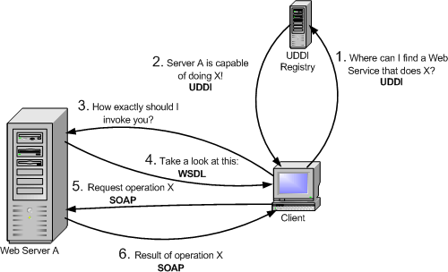
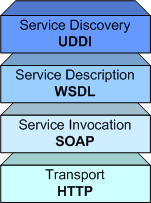

Globus > Toolkit > Documentation > 3.2 > Key Concepts <
Overview
OGSA, OGSI, and GT3.2
>Web Services: architecture and languages
Grid Services
GT3.2 Architecture
Security
Java & XML
Web Services are the basis for Grid Services, which are the cornerstones of OGSA and OGSI (and, therefore, of the Globus Toolkit 3). Understanding the Web Services architecture is fundamental to using GT3.2 and programming Grid Services.
Lately, there has been a lot of buzz about "Web Services", and many companies have begun to rely on them for their enterprise applications. So, what exactly are Web Services? To put it quite simply, they are yet another distributed computing technology (like CORBA, RMI, EJB, etc.) They allow us to create client/server applications.
For example, let's suppose you must develop an application for a chain of stores. These stores are all around the country, but your master catalog of products is only available in a database at your central offices, yet the software at the stores must be able to access that catalog. You could publish the catalog through a Web Service called ShopService.
IMPORTANT: Don't mistake this with publishing something on a website. Information on a website (like the one you're reading right now) is intended for humans. Information which is available through a Web Service will always be accessed by software, never directly by a human (despite the fact that there might be a human using that software). Even though Web Services rely heavily on existing Web technologies (such as HTTP, as you will see in a moment), they have no relation to web browsers and HTML.
The clients (the PCs at the store) would then contact the Web Service (in the server), and send a service request asking for the catalog. The server would return the catalog through a service response. Of course, this is a very sketchy example of how a Web Service works. In a moment we'll see all the details.
So why would you use Web Services instead of RMI, CORBA, EJBs and countless other technologies? Web Services have certain advantages over other technologies:
Web Services also have some disadvantages:
However, there is one important characteristic that distinguishes Web Services. While technologies such as CORBA and EJB are oriented toward highly coupled distributed systems, where the client and the server are very dependent on each other, Web Services are oriented towards loosely coupled systems, where the client might have no prior knowledge of the Web Service until it actually invokes it. Highly coupled systems are ideal for intranet applications, but perform poorly on an Internet scale. Web Services, however, are better suited to meet the demands of an Internet-wide application, such as grid-oriented applications.
Let's take a look at all the steps involved in a complete Web Service invocation. The acronyms (SOAP, WSDL, ...) will be explained in further detail below. [explain that it's not really typical - see below]

- As you said before, a client may have no knowledge of what Web Service it is going to invoke. So, our first step will be to find a Web Service that meets our requirements. For example, you might be interested in locating a public Web Service which can give me the temperature in US cities. We'll do this by contacting a UDDI registry.
- The UDDI registry replies, telling us what servers can provide the service you require (e.g. the temperature in US cities.)
- You now know the location of a Web Service, but you have no idea of how to actually invoke it. You know it can provide the temperature of a US city, buy what is the actual service invocation? The method you'd use to invoke might be called Temperature getCityTemperature(int CityPostalCode), but it could also be called int getUSCityTemp(string cityName, bool isFarenheit). You have to ask the Web Service to describe itself (i.e. tell us exactly how you should invoke it)
- The Web Service replies in a language called WSDL.
- You finally know where the Web Service is located and how to invoke it. The invocation itself is done in a language called SOAP. Therefore, you will first send a SOAP request asking for the temperature of a certain city.
- The Web Service will kindly reply with a SOAP response which includes the temperature you asked for, or maybe an error message if our SOAP request was incorrect.
You have just seen a simple Web Service invocation. At one point, the UDDI registry 'told' the client where the Web Service is located. But how exactly are Web Services addressed? The answer is very simple: just like web pages. You use plain and simple URIs (Uniform Resource Identifiers). If you're more familiar with the term URL (Uniform Resource Locator), don't worry: URI and URL are practically the same thing.
For example, the UDDI registry might have replied with the following URI:
http://webservices.mysite.com/weather/us/WeatherServiceThis could easily be the address of a web page. However, remember that Web Services are always used by software (never directly by humans). If you typed a Web Service URI into your web browser, you would probably get an error message or some unintelligible code (some web servers will show you a nice graphical interface to the Web Service, but that isn't very common.) When you have a Web Service URI, you will usually need to give that URI to a program. In fact, most client programs will receive the Grid Service URI as a command-line argument.
Now that you've seen the different players in a Web Service invocation, let's take a closer look at the Web Services Architecture:

Despite having many protocols and languages, Web Services developers usually never write a single line of SOAP or WSDL. Once you've reached a point where your client application needs to invoke a Web Service, you delegate that task to a piece of software called a client stub. The good news is that there are many tools that can generate client stubs automatically, usually based on the WSDL description of the Web Service.
Therefore, you shouldn't interpret the "Typical Invocation" diagram literally. A Web Services client doesn't usually do all those steps in a single invocation. A more correct sequence of events would be the following:
Programming the server side is just as easy. You don't have to write a complex server program which dynamically interprets SOAP requests and generates SOAP responses. You can simply implement all the functionality of our Web Service, and then generate a server stub (the term skeleton is also used) which will be in charge of interpreting requests and fowarding them to the service implementation. When the service implementation obtains a result, it will give it to the server stub, which will generate the appropriate SOAP response. The server stub can also be generated from a WSDL description, or from other interface definition languages (such as IDL). Furthermore, both the service implementation and the server stubs are managed by a piece of software called the Web Service container, which will make sure that incoming HTTP requests intended for a Web Service are directed to the server stub.
So, the steps involved in invoking a Web Service are described in the following diagrams.
Let's suppose that you've already located the Web Service, and generated the client stubs from the WSDL description. The server-side programmer will have generated the server stubs.
Most of the Web Services Architecture is specified and standardized by the World Wide Web Consortium, the same organization responsible for XML, HTML, CSS, etc.
Next Page >> Grid Services